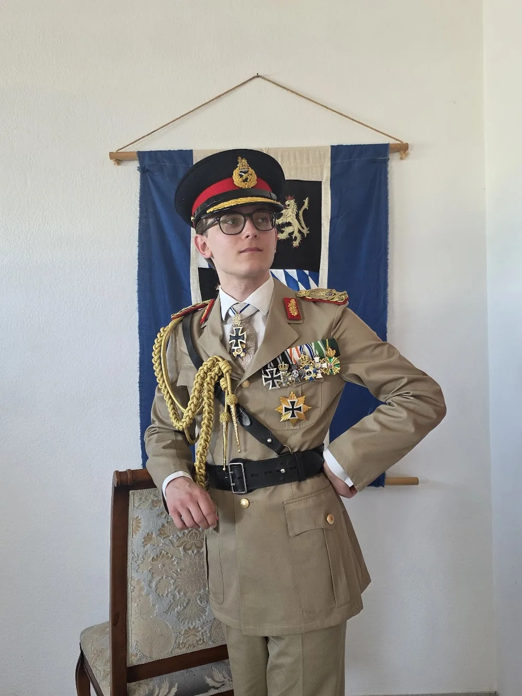
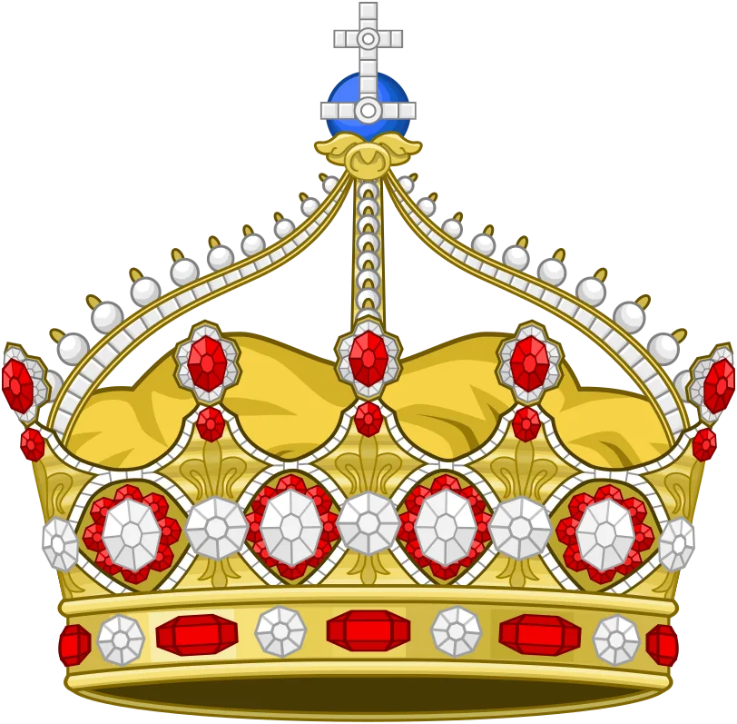

Imperium Germanicum – The Interactive Role-Play

AboutThe Imperium Germanicum
A fictional confederation in Europe – the interactive role-play

Head of stateThe Sovereign

InsightsThe Picture Gallery
New Decrees and LawsView
The Imperial CharterRead
The Sovereign is the highest representative of the Empire and as such enjoys the highest dignity.

TerritoryThe Imperial Map
For lovers of monarchy, nobility, the military and history
The interactive role-play
The Imperium Germanicum is a fictional confederation of states in Europe, based on the borders of the former Holy Roman Empire. It depicts an alternative present in which the Holy Roman Empire survived the centuries and has continued to develop into modern times.
Like its historical predecessor, the Imperium Germanicum consists of countless smaller states, including various principalities, kingdoms, duchies and other territorial bodies.
Very high up in the hierarchy are the 9 Prince-Electors, who are the 9 heads of state of the Empire's most important constituent states; together they form the so-called Imperial Senate.
One of the Senate's most important tasks is to elect the Sovereign and head of state of the Imperium Germanicum, the Emperor.
The Emperor is elected for 1 year from among the 9 Prince-Electors, and re-election is possible without limit.
To the structure of the state
Institutions & Constitution
All institutions
A brief overview
A small taste of some of our numerous institutions and the constitution of the Empire


Interactive
Who elects, who appoints, who oversees
The organisational chart shows all organs of the Empire with their current office holders and who elects, appoints, oversees or can overrule whom.
To the interactive organisation chart – open the organisation chart
– open the organisation chart – Enlarge map
– Enlarge map
Central and Southern Europe
Territory of the Imperium Germanicum
The Imperium Germanicum is located in Central and Southern Europe and covers a territory of 1,205,000 km².
Owing to the personal union of the imperial throne with the royal throne, the Kingdom of Apulia is de facto a part of the Empire, as is the Holy See, within whose territory His Holiness the Pope holds a special position, while His Majesty the Emperor controls the military and civil administration.
The Imperium Germanicum is also organised as a partially centralised federal state.
The Empire consists of many constituent states of varying size, which mostly determine their internal affairs themselves.
Here the rule prescribed by the Charter applies that imperial law overrides state law wherever laws conflict.
The Imperium Germanicum as a whole therefore has 217,000,000 citizens.
9 of the Empire's constituent states are so-called Electorates, whose respective head of state holds a seat as Prince-Elector in the Senate, the executive body of the Empire.
All other heads of state hold a seat, together with their respective delegation, in the Imperial Diet, the legislative body of the Empire.
To the Imperial map
Insignia
The Crowns of the Empire



Interested? Become part of the Imperium Germanicum.
Report for duty